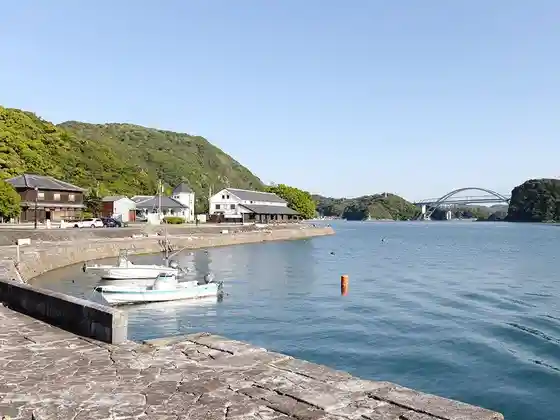
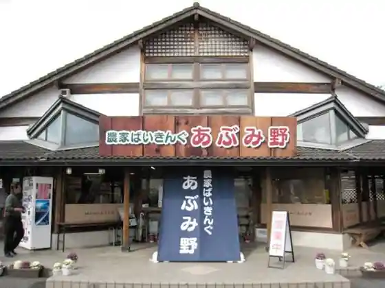
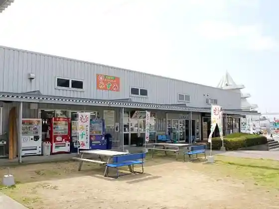

Sankaku Nishiko
Uki, Kumamoto · 0964-53-0010 · Official / source link

Aguri Park Toyono
Uki, Kumamoto · 0964-45-2339 · Official / source link

Sansan Ukitsu Ko Misumi
Uki, Kumamoto · 0964-27-4188 · Official / source link

Guddoin Matsuhashi
Uki, Kumamoto · 0964-46-1505 · Official / source link
Nagomi Onsen Yasuragi Baths
Uki, Kumamoto · 0964-47-5533 · Official / source link
Prefectural Toyono Shonen Nature no Ie Donguri Village Campground
Uki, Kumamoto · 0964-45-3855 · Official / source link
Matsu Go Local History Museum
Uki, Kumamoto · 0964-42-3560 · Official / source link
Ishiuchi Damu Museum
Uki, Kumamoto · 0964-53-1111 · Official / source link
Wakamiya Beach
Uki, Kumamoto · 0964-53-1111 · Official / source link
Ogawa Aso Shrine
Uki, Kumamoto · 0964-43-1111 · Official / source link
Mai Shigi Monju Do (Moshigi Monjudo)
Uki, Kumamoto · 0964-32-1111 · Official / source link
Nagao Tsurugi Shrine (Ei no Otsurugijinja)
Uki, Kumamoto · 0964-32-1604 · Official / source link
Oda Ryo Burial Mound (Odarakofun)
Uki, Kumamoto · 0964-32-1111 · Official / source link
Mi no Da Farm
Uki, Kumamoto · 0964-52-2277 · Official / source link
Shinpi no Hi (Shiranui)
Uki, Kumamoto · 0964-32-1111 · Official / source link
Matsu Go Shirakabe Dozo Gun
Uki, Kumamoto · 0964-42-3560 · Official / source link
Hagio Sono
Uki, Kumamoto · 0964-33-5259 · Official / source link
Ukiuki Toyono Himawari Sono
Uki, Kumamoto · 080-1771-0183 · Official / source link
Ho no Kan (Kyu Sankaku Kan'i Saibansho)
Uki, Kumamoto · 0964-53-1111 · Official / source link
Omi Ishidatami Park
Uki, Kumamoto · 0964-32-1111 · Official / source link
Gun Ura no Tenjin Kusu (Ko no Ura no Tenjinkusu)
Uki, Kumamoto · 0964-32-1111 · Official / source link
Ukiukiranran ♪ Tourist Farm (Yugengaisha Miyagawa Yoran)
Uki, Kumamoto · 0964-53-0752 · Official / source link